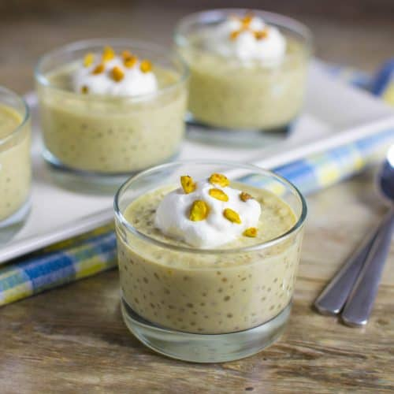
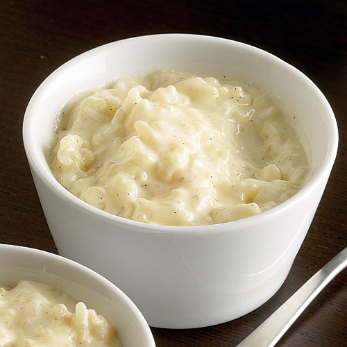
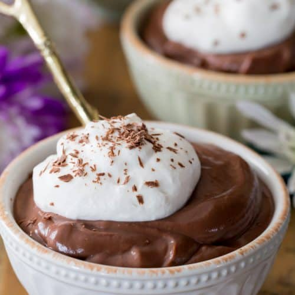

Scott Olthoff: Ice Cream is the best dessert!
Rohit Victor: A Pudding for every occasion!

Wonders of Pudding
- An alternative to the ever so popular ice-cream is the pudding.
- Puddings can be eaten hot or cold, depending on the type, refrigeration is not a necessity.
- Puddings are easier to make at home.

Health Benefits
- Pudding can make something as bland as rice into something mouth-wateringly delicious.
- There are a large variety of puddings. Puddings can also be healthy!
- There are more options with pudding, for people who're concerned for their health.

More with Pudding!
- You are guaranteed to get more pudding for the same price!
- Since pudding is not as popular as ice-cream, the demand is not as high.
- When something does not have a high demand, its price goes down.
- Economics agrees that puddings are cheaper, so you're cutting costs by consuming pudding!